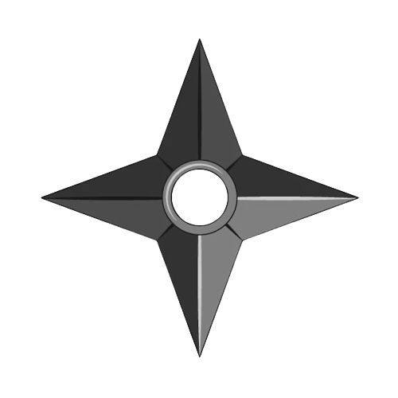
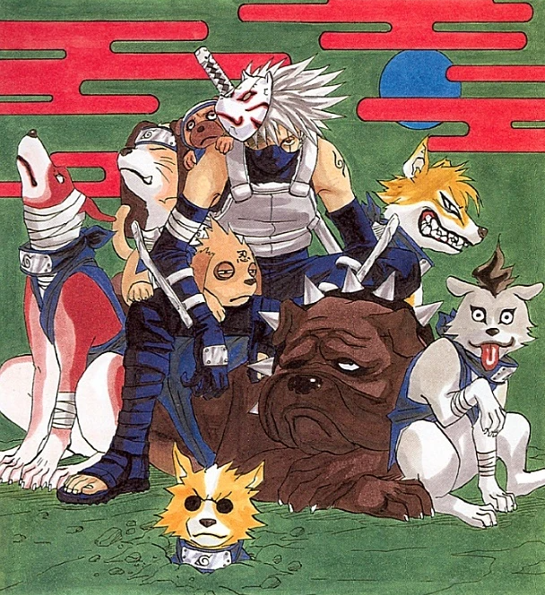
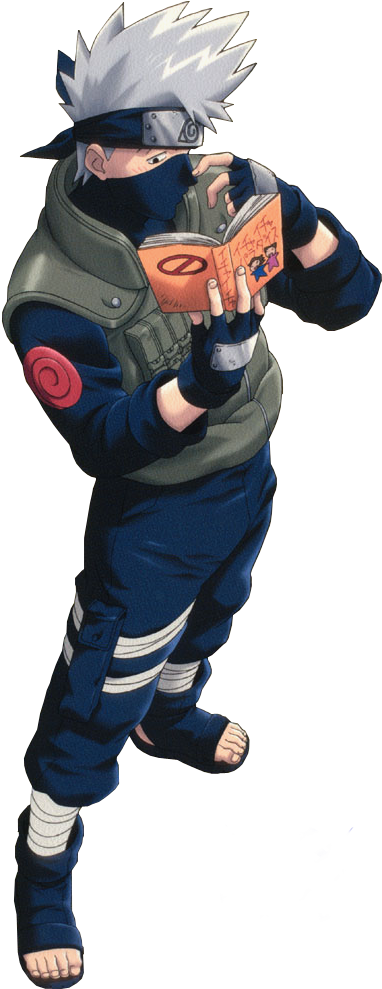

Kakashi Hatake
Personnalité
-
De prime abord, Kakashi apparaît comme quelqu'un de solitaire, calme, détaché et désinvolte, voire
apathique. Il a toujours l'air vaguement endormi, arrive toujours en retard aux rendez-vous et
trouve
toujours une excuse bidon pour se justifier. Mais il n'en a pas toujours été ainsi, les événements
s'étant déroulés dans son enfance lorsqu'il devint jônin et qui conduisent au décès de son camarade
Obito Uchiwa l'ont grandement influencés. Kakashi était alors un jeune homme sérieux, respectueux
des
règles jusqu'à l'excès et de ce fait toujours ponctuel. Il souffrait toutefois d'un manque certain
d'esprit d'équipe qui abouti à une tragédie. Depuis, pour Kakashi, le travail de groupe, la
protection
de ses camarades et de ses élèves est une priorité absolue. C'est pourquoi il s'évertuera toujours à
inculquer l'esprit d'équipe aux membres de l'Équipe 7 sous son commandement, et notamment à Sasuke
Uchiwa dont le caractère est très proche de celui qu'il avait étant jeune.
Compétences
-
Kakashi est un génie naturel comme en témoigne sa vitesse. Il traversa en effet les échelons ninjas
avec
une
facilité déconcertante : à 5 ans, il fut diplômé de l'Académie Ninja, à 6 ans, il devint chûnin, à
13
ans,
il devint jônin et il eut une longue carrière dans l'Anbu. Au cours de sa carrière, il acquit un
millier
de
techniques grâce à son Sharingan, ce qui fait de lui un ninja très complet. Ses différentes
réalisations
lui
valurent bien des éloges de ses camarades, ce qui fait qu'il eut beaucoup d'influence au point que
le
conseil faillit faire de lui le Hokage. Il fut souvent chargé des tâches importantes comme
surveiller
Naruto
et son sceau au cas où il se fragiliserait.

Dojutsu
-
Il possède le Sharingan, attribut héréditaire seulement possédé par les Uchiwa, il le reçut de son ami Obito pendant une mission. Il le maniait parfaitement, au point qu'Itachi lui-même reconnaissait son talent. Grâce à cela, il put copier un millier de techniques diverses et variées ce qui lui valut son surnom de « Ninja copieur ». Il peut aussi prévoir les mouvements de ses adversaires, ce qui lui donne un avantage.
Cependant, comme il n'est pas un Uchiwa, cela lui demande beaucoup de chakra. Il ne l'utilise d'ailleurs qu'en cas de grande nécessité. Il maitrise aussi le Kaléidoscope Hypnotique du Sharingan. Il l'obtint après avoir ôté la vie à sa camarade, Rin.[24] Il lui permet d'utiliser la technique Kamui et d'envoyer ce qu'il vise dans une dimension parallèle, que ce soit un bras ou une explosion, mais cela lui demande tellement d'énergie qu'il reste une semaine en repos. De plus, cette technique ne fonctionne pas sur Tobi à cause de son Ninjutsu dimensionnel. Il peut même téléporter des armes physiques, tel que le kunaï qui lui permit de se téléporter jusqu'à Tobi, les techniques, comme le Rasengan de Naruto, et même les armes d'origines spectrales car il envoya une flèche du Susanô de Sasuke dans une autre dimension. Pendant la Quatrième Grande Guerre Shinobi, il est capable de revenir de l'autre dimension et même d'absorber Hachibi.

